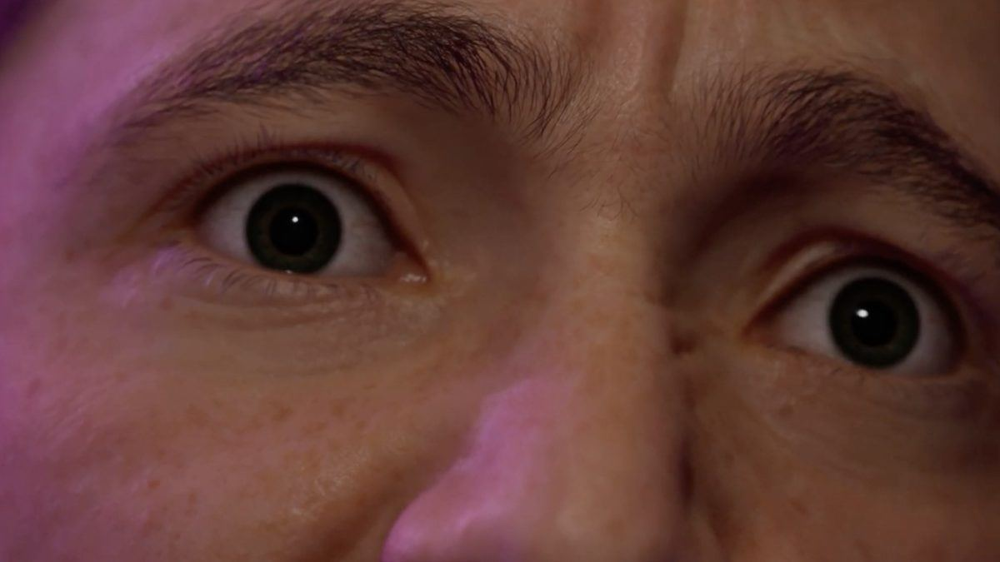

Omni
A 6-minute animated short made in Unreal Engine with MetaHuman characters and motion capture.

The film
Omni is a 6-minute 3D animated short made in Unreal Engine, with realistic MetaHuman characters and motion capture.
My role
I was a 3D artist and animator on a 7-person team.
- Designed characters with MetaHuman
- Used motion capture to bring the characters' movement to life
- Animated and designed scenes in Unreal Engine
- Project
- University of Utah, Spring 2024
- Length
- About 6 minutes
- Engine
- Unreal Engine, MetaHuman, motion capture
- My role
- 3D artist, animator
Animation
Facial animation
Motion capture
More work: 3D & Animation, Film & Content